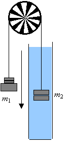
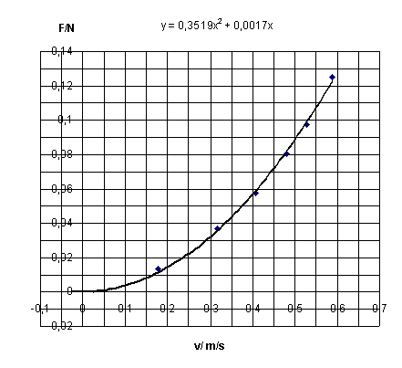

FormålEt legeme, som bevæger sig gennem en væske påvirkes af denne, men hvorledes afhænger modstandskraften af hastigheden i bevægelsen? Øvelsens formål er at finde frem til denne afhængighed.
Vha. Newtons 2. lov fås:
m1·g – m2·g + Fopdrift - Fmodstand = mres·a,
Her regner vi med, at m1 bevæger sig i aksens retning.
Forklar hvert enkelt led i ligningen. Indtegn kræfterne på figuren. Opskriv et udtryk for Fopdrift udtrykt ved m2.
Ligningen ser selvfølgelig anderledes ud, hvis bevægelsen starter med m2 øverst i karret.
Med LabPro og fotogate + trisse måles s(t) for forskellige masser. Man kan starte med en masse af m1, som lige netop kan løfte m2 i en langsomt accelereret bevægelse. Herefter øges m1 med fx 5 g på forsøg. Man kan benytte 2 trisser for at øge afstanden mellem m1 og m2, således at m2 bevæger sig midt i karret.
Hastigheden bestemmes ved differentiation i tabellen i Datalyse. Accelerationen bestemmes vha. lineær regression på en del af grafen. Hermed haves sammenhørende værdier af hastighed og acceleration.
Herefter afbildes Fmodstand som funktion af hastigheden og vi får svar på vores spørgsmål: hvorledes afhænger modstandskraften af hastigheden?
